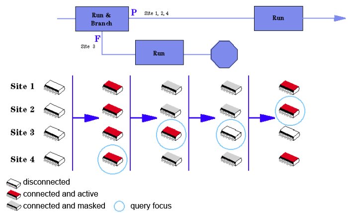

focus
There is always one site which has the (query) focus. For this site, results are displayed in the testflow and on the Error Map. Firmware queries that do not include a site number always return the results for the site on focus.
The figure below gives an example of how the execution states may change within a testflow:

Functional changes
- Introduced before SmarTest 6.3.2